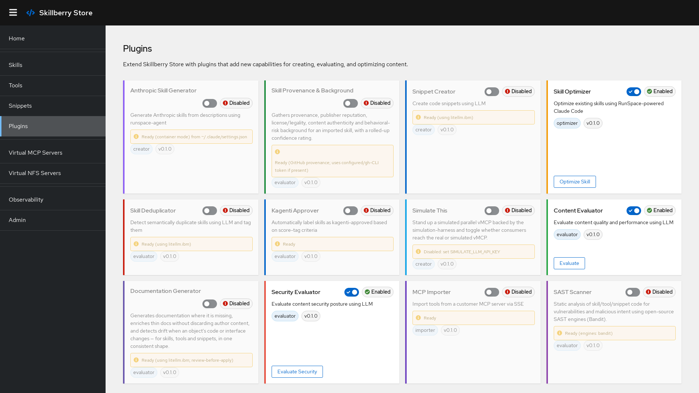

Installing plugins
Two plugins ship by default with the base install — dedupe and kagenti-approver. Add more via pip extras:
# Base install (includes the two default plugins)
pip install skillberry-store
# Everything
pip install skillberry-store[plugins-all]
# A single plugin
pip install skillberry-store[plugin-creator]
# Several at once
pip install skillberry-store[plugin-creator,plugin-evaluator,plugin-skill-optimizer]The store automatically discovers and loads newly installed plugins on the next restart. Both default plugins can be uninstalled individually if you don't need them.

Installed plugins in the Skillberry Store UI
Creation & generation
Creator
AI-powered snippet creation from natural-language descriptions, with automatic metadata inference (language, tags). Works with multiple LLM providers via llm-switchboard.
Anthropic Skill Generator
Generates complete Anthropic skills (SKILL.md, tools, docs) from a description using Claude Code, then imports them into the store. Runs in a container by default.
Doc Generator
Generates, enriches, and drift-checks documentation for skills, tools, and snippets.
Evaluation & quality
Evaluator
AI-powered content evaluation and automatic tagging, with confidence scores for each suggested tag. Underpins the quality / performance / security score tags.
Dedupe
Detects semantically duplicate skills on create/update by comparing descriptions in a single LLM call, then tags matches with duplicate:{name} and records why. Runs automatically.
Kagenti Approver
Labels skills kagenti-approved when their score tags meet configurable criteria (e.g. security-score>=9,performance-score>=8), and revokes the label when they no longer do. No LLM required.
Security & provenance
Security
AI-powered security evaluation of skill, tool, and snippet content.
SAST
Static application security testing of skill/tool/snippet code.
DAST
Dynamic security testing: discovers entry points, exercises them with adversarial inputs, and observes effects (detect-and-report).
Provenance
Gathers provenance, authenticity, and legality background for imported skills.
Dependency Tracker
Discovers external Python package dependencies (version + hash, transitive to a max depth).
Import
MCP Importer
Imports tools from any customer MCP server over SSE — no LLM required. Each tool is created with packaging_format="mcp" and is immediately executable via the store's MCP path.
skills.sh Importer
Searches and imports skills from the skills.sh directory into the store.
Optimization & agents
Skill Optimizer
Optimizes an existing skill using a RunSpace-powered Claude Code session, importing the result as a new <name>_optimized skill with full optimization metadata attached.
Ask RunSpace
Runs the RunSpace agent on a free-text task and returns its summary.
Simulate
Stands up a simulated parallel vMCP backed by the simulation harness, and toggles real/sim per skill.
Using a plugin's API
Plugins that expose REST routes are reachable under the store's API. For example, the MCP Importer:
curl -X POST http://localhost:8000/plugins/mcp-importer/import-tools \
-H "Content-Type: application/json" \
-d '{"mcp_url": "http://my-mcp-server:8080/sse"}'LLM-backed plugins are configured through environment variables via llm-switchboard:
export LLM_PROVIDER=openai.async # or litellm, etc.
export LLM_MODEL=gpt-4
export OPENAI_API_KEY=your_keyBuild your own
A plugin is a small Python package that subclasses PluginBase and optionally exposes routes:
from skillberry_store.plugins.base import PluginBase, PluginMetadata, PluginType
class MyPlugin(PluginBase):
def __init__(self):
super().__init__(PluginMetadata(
name="my-plugin", version="0.1.0",
description="My custom plugin",
plugin_type=PluginType.GENERAL,
))
def is_enabled(self) -> bool:
return True
def get_routes(self):
from fastapi import APIRouter
router = APIRouter()
@router.get("/hello")
async def hello():
return {"message": "Hello from my plugin"}
return routerFull installation options, per-plugin configuration, API request/response shapes, and the authoring guide live in the repository's Plugin Installation Guide.